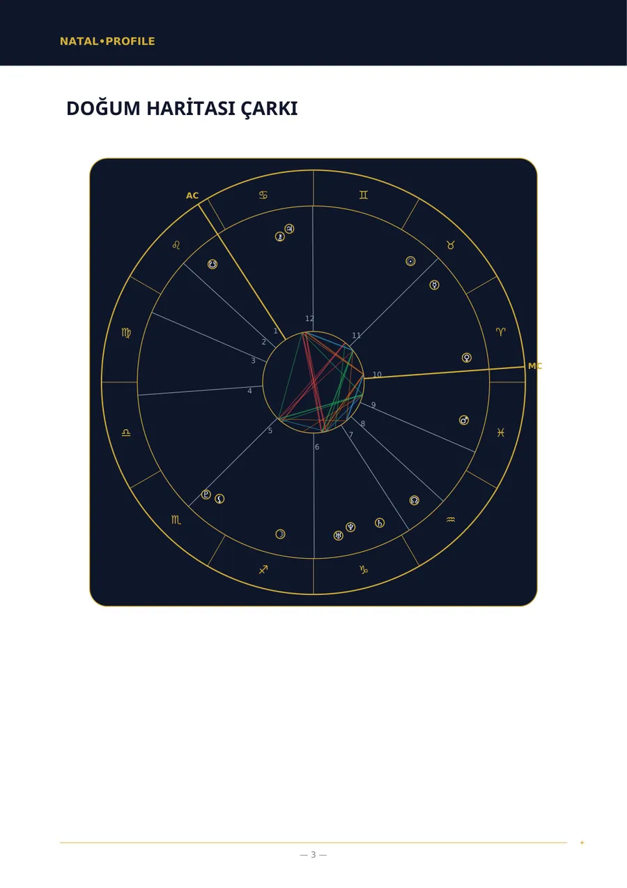
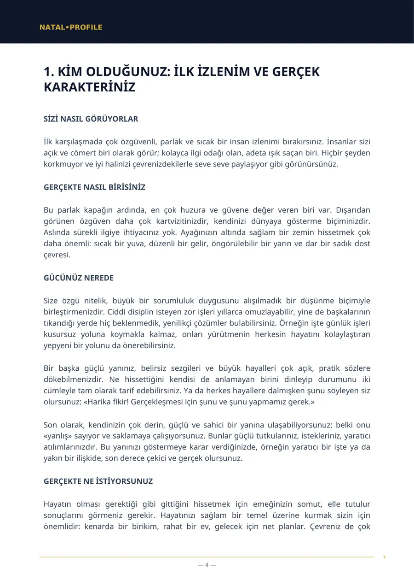
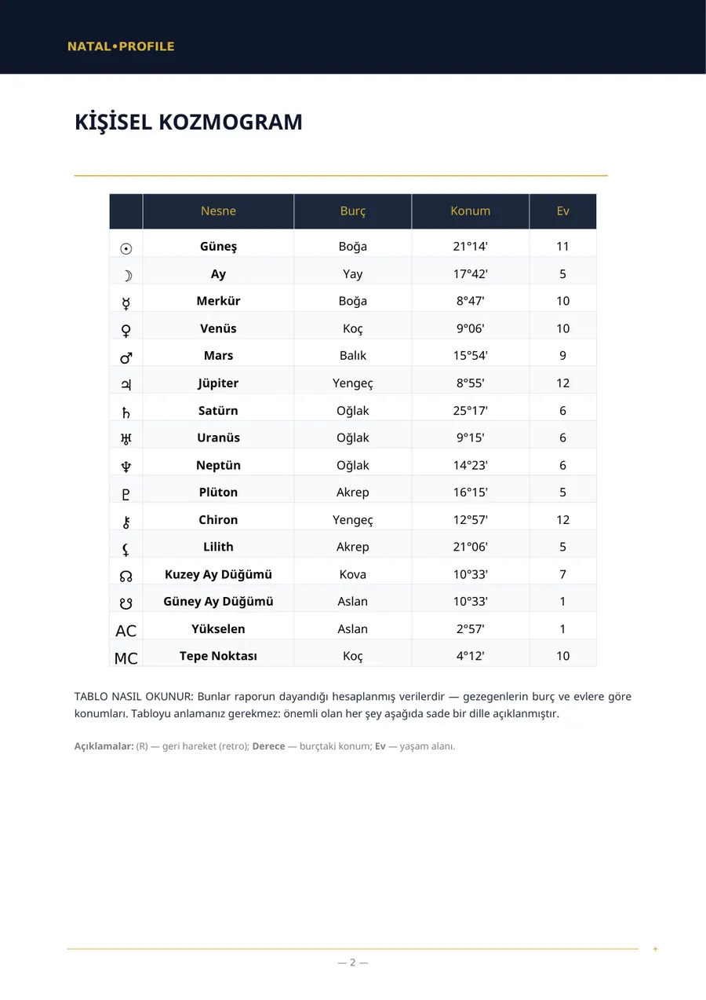
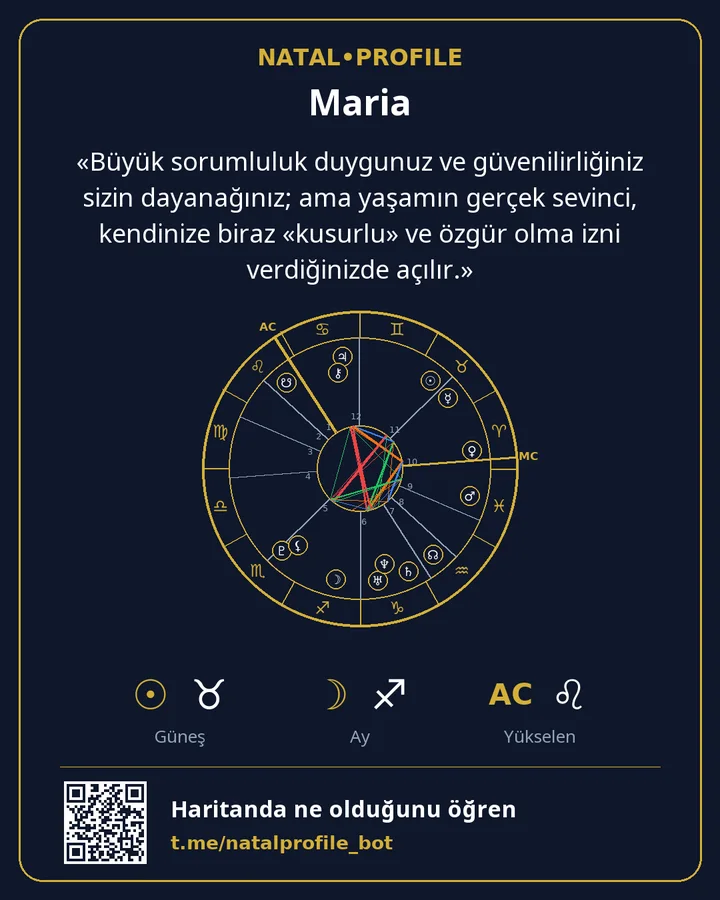

Doğum haritanız, sade bir dille
Doğum tarihinizi, saatinizi ve şehrinizi girin; birkaç dakika içinde bir PDF alın: karakteriniz nasıl, gücünüz nerede, sizi ne engelliyor ve nereden başlamalısınız. Terim yok, burçlar hakkında genel laflar yok.
- Swiss Ephemeris ile hesaplanır
- 15 dil
- Abonelik yok
İki hızlı hesaplama
Tarayıcınızda çalışır. Hiçbir şey gönderilmez veya kaydedilmez.
Güneş burcu ve element
Tüm haritayı yorumlat →Güneş burcu, haritadaki onlarca noktadan yalnızca biridir. Rapor tüm gezegenleri, evleri ve aralarındaki bağları dikkate alır.
Yaşam yolu sayısı
Numeroloji analizini al →Botun raporundaki yöntemle hesaplanır: tarihin rakamları tek hane kalana dek toplanır. İsim sayıları botta hesaplanır.
Rapor nasıl görünür
«Doğum haritası» raporunun gerçek sayfaları. Bu bir örnektir: doğum bilgileri kurgusaldır.




«Büyük sorumluluk duygunuz ve güvenilirliğiniz sizin dayanağınız; ama yaşamın gerçek sevinci, kendinize biraz «kusurlu» ve özgür olma izni verdiğinizde açılır.»
Neler sipariş edebilirsiniz
Rapor sayfalarındaki bölüm listeleri, PDF'te alacağınız bölümlerdir. Fiyatlar Telegram Stars cinsindendir.
Doğum Haritası (Tam Analiz)
Doğum tarihi, saati ve yerinden karakterinizin eksiksiz analizi.
Doğum Haritası (Temel Analiz)
Doğum saati bilinmediğinde karakter analizi.
Uyum Analizi (Tam)
İki kişi: sizi ne çekti, nerede ayrışıyorsunuz ve birbirinize ne veriyorsunuz.
Uyum Analizi (Temel)
Doğum saati bilinmediğinde karakter uyumu.
Kariyer ve Finans Analizi
İşte nelerde güçlüsünüz, hangi uğraşlar size uygun ve parayla aranız nasıl.
Çocuk Haritası — çocuğunuz için bir rehber
Çocuğunuzun huzurlu olması için neye ihtiyacı var ve onu nerede desteklemelisiniz.
Yıllık Tahmin (Güneş Dönüşü)
Doğum gününden doğum gününe yılınızın temaları ve tarihli dönemler.
Günlük Burç Yorumu
Ay açılarının kesin saatine göre bugün için yorum.
İsim ve Doğum Tarihine Göre Numeroloji
Pisagor sistemine göre adınızın ve doğum tarihinizin sayıları.
Vedik Harita (Jyotish)
Vedik harita: lagna, grahalar, nakshatra ve daşa dönemleri.
Nasıl çalışır
İlk mesajdan hazır dosyaya birkaç dakika.
Botu açın
Telegram'da, kayıt ve şifre olmadan.
Bilgilerinizi girin
Ad, doğum tarihi, saati ve şehri. Şehir listeden seçilir.
PDF'i alın
Genellikle 5 dakika içinde. Dosya sohbete gelir.
Kartı saklayın
Haritanız ve rapordaki ana cümleyle bir görsel.
Ödeme
Raporlar, botla sohbetin içinde Telegram Stars ile ödenir. Abonelik yoktur; her rapor için bir kez ödersiniz.
Haritanızla birlikte doğum analizinin ilk bölümü ve günlük burç yorumu — her biri bir kez, ödemesiz.
Bir rapor için ödeme yapar, bir bağlantı alırsınız. Arkadaşınız bağlantıyı açar, kendi bilgilerini girer ve analizi alır.
Botta «Ödeme yapamıyor musunuz?» yardımı vardır; destek Telegram'da yanıt verir.
Verileriniz
Doğum tarihi, saati ve yeri yalnızca haritayı hesaplamak ve raporu yazmak için gerekir.
PDF gönderildikten sonra ad, doğum tarihi, saati ve yeri silinir.
PDF sunucuda 24 saat kalır, sonra silinir. Sizde sohbette durur.
Hesaplayıcılar tarayıcınızda çalışır. Sitede form, kayıt veya izleyici yoktur.
Sık sorulan sorular
Doğum saatimi bilmiyorum. Ne yapmalıyım?
«Doğum saati olmadan» raporunu seçin. Evler ve yükselen burç yer almaz; ama karakter, duygular, düşünme biçimi ve ilişkiler bunlar olmadan da anlatılır.
Burç yorumundan farkı ne?
Burç yorumu yalnızca Güneş'in konumunu kullanır. Rapor, doğum tarihiniz, saatiniz ve yeriniz için tüm gezegenleri, evleri ve aralarındaki bağları hesaplar.
Raporun metnini kim yazıyor?
Gezegen konumlarını bir yazılım Swiss Ephemeris ile hesaplar. Ardından bir dil modeli, bu hesaplara dayanarak sabit kurallarla metni yazar.
Raporlar hangi dillerde?
On beş dilde: İngilizce, Rusça, İspanyolca, Hintçe, Portekizce, Vietnamca, Türkçe, Endonezce, Özbekçe, Kazakça, Fransızca, Almanca, İtalyanca, Arapça ve Farsça.
İade alabilir miyim?
Rapor size özel hazırlanır; bu nedenle PDF teslim edildikten sonra ödeme iade edilmez. Rapor bizim hatamızla oluşturulamadıysa tutarın tamamı iade edilir.
Ücretsiz bölümle başlayın
Haritanızı hesaplar ve gerçek analizin ilk bölümünü göndeririz. Beğenirseniz tamamını alırsınız.